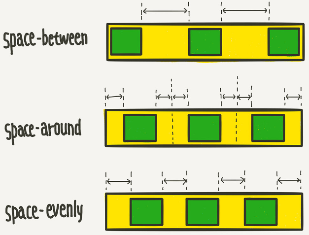

뷰포트나 요소의 크기가 불명확하거나 동적으로 변할때에도 효율적으로 요소를 배치, 정렬, 분산할 수 있는 방법을 제공하는 CSS의 새로운 레이아웃 방식
flexbox layout의 장점은 '복잡한 계산없이 요소의 크기와 순서를 유연하게 배치할 수 있다라는 것임
정렬, 방향, 순서, 크기 등을 유연하게 조절할 수 있기 때문에 별도의 분기처리를 줄일 수 있고, CSS만으로 다양항 레이아웃 구현 가능
flexbox froggy - 개구리랑 놀기

display: flex - flex 컨테이너에게 flex 박스 레이아웃 적용시작
align-items: cross axix를 기준으로 아이템들을 수직 정렬함
ex) align-items: start, align-items: center, align-items: end
justify-content: main axis를 기준으로 아이템들을 수평 정렬함
ex) justify-content: start, justify-content: center, justify-content: end
flex-direction: 메인축을 기준으로 아이템을 어떻게 배치할 것인지 결정 - row(가로), column(세로), reverse-row(가로 꺼꾸리), reverse-column(세로 꺼꾸리)
flex 컨테이너 내에 포함된 항목들을 일정 간격으로 배치하려면 justify-content 속성을 사용
space-between: 항목들 사이에 일정한 간격으로 배치
space-around: 항목들 주위에 일정한 간격으로 배치
space-evenly: 항목들 양끝에 일정한 간격으로 배치
각 항목들의 시각적 나열 순서를 결정할때 order라는 속성 이용
숫자가 낮을수록 앞(먼저)에 배치됨